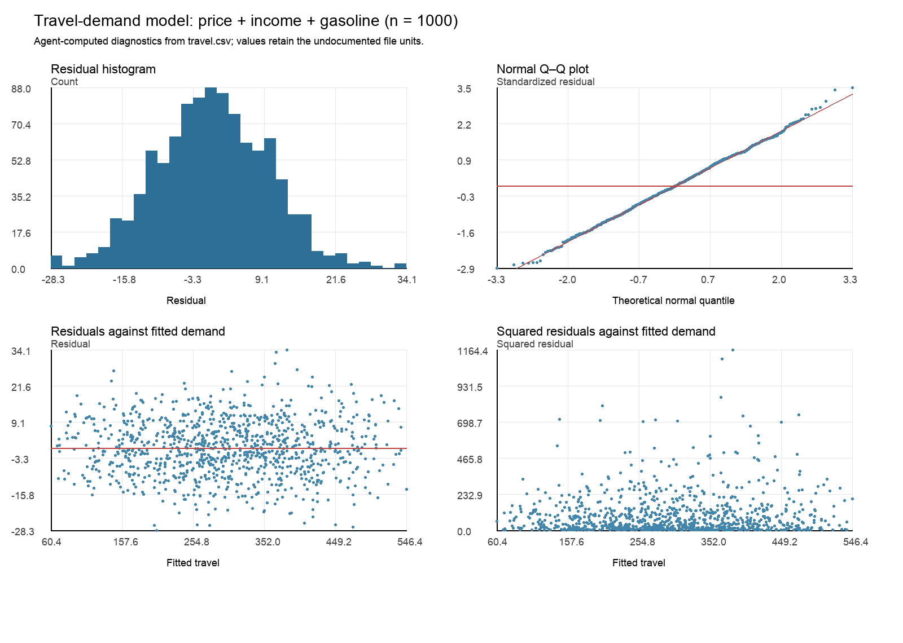

Calculate residual diagnostics and bound their conclusions
Explanation, worked examples and practice
Useful first: Derive and interpret scalar and matrix OLS, Apply BLUE and classical inference with their stated conditions
Outcome and conditions
Interpret the recorded residual plots, compute the note-supported Jarque–Bera and studentized Breusch–Pagan/Koenker statistics, make stated-level decisions from supplied p values, and identify assumptions they cannot establish.
Study conditions, assessment scope and sources
Required components (all must be elicited and passed):
- C1: Defines moments/normal benchmarks and correctly calculates \(JB\) with \(\mathrm{df}=2\).
- C2: Correct squared-residual auxiliary model/\(LM\) and nonconstant-regressor \(\mathrm{df}\).
- C3: Appropriate shape/spread plot reading and stated 5% decisions with asymptotic conditions.
- C4: Explicit limited-test, nonrejection, sampling/exogeneity/causal/provenance boundaries.
Finished-note authority:
- Assumption checks: what diagnostics can establish
- Normality: a plot and a moment test
- Homoskedasticity: a spread plot and an auxiliary regression
- Assumptions that remain substantive
Teaching/support: relevant finished notes, supplied prompts and calculator permitted. Independent and delayed checks: closed notes, no lesson/keys/software-generated explanation/search/AI assistance, no hints; a basic arithmetic calculator is allowed and must be reported. Numerical inputs/cutoffs/p values in the question are allowed data. The teacher hides keys until an answer is committed. Unknown assistance/access/exposure is unscorable for independent acquisition. A previously exposed item cannot be counted as fresh. A learner may explain orally or in writing; mathematical reasoning and units must be explicit.
Prerequisites and checks
Check the prerequisites
O008-P1
item_id: O008-P1, item_version: 1, role: prerequisite diagnostic. Capability: O002; reason: Residuals/orthogonality and rank distinguish fitting from assumptions.
Prompt: Define residual and say whether \(\sum_i\hat u_i=0\) demonstrates population exogeneity.
Key: Residual actual minus fitted; sum \(0\) with intercept is a fitting identity, not \(E[u\mid x]=0\).
Rubric: pass only if the stated answer and its essential reason are correct without help; partial for incomplete reasoning or a recoverable arithmetic slip; fail for a contrary concept or no usable answer. This diagnostic never counts toward acquisition. Repair: Return to O002 Explanation3–5 and supported task.
Prepared prerequisite: Explanation steps.
O008-P2
item_id: O008-P2, item_version: 1, role: prerequisite diagnostic. Capability: O005; reason: Shape, constant spread and inference conditions must be distinguished.
Prompt: Does homoskedasticity mean normality? What does nonrejection say?
Key: No: constant conditional variance versus conditional shape. Nonrejection records insufficient evidence against the null at the stated level, not proof.
Rubric: pass only if the stated answer and its essential reason are correct without help; partial for incomplete reasoning or a recoverable arithmetic slip; fail for a contrary concept or no usable answer. This diagnostic never counts toward acquisition. Repair: Return to O005 definitions/Explanation6; local p-value decision repair is Explanation4 below.
Prepared prerequisite: Explanation steps.
Adequate committed current-version evidence for the named capability permits skipping that diagnostic; familiarity/confidence does not. If there is no evidence, ask each diagnostic once. Local foundation failures use the exact explanation here, not an improvised prerequisite curriculum.
Motivation, intuition, and definitions
Interpret the recorded residual plots, compute the note-supported Jarque–Bera and studentized Breusch–Pagan/Koenker statistics, make stated-level decisions from supplied p values, and identify assumptions they cannot establish. The question is what the available information lets us calculate or conclude, and which extra conditions the conclusion needs.
The finished note explicitly selects these diagnostic methods to implement an open-ended seminar task; the handout did not name them. Jarque–Bera uses skewness \(S\) and kurtosis \(K\) with normal benchmarks \(0\) and \(3\). Homoskedasticity is constant conditional disturbance variance; the studentized BP/Koenker auxiliary regression explains squared residuals by an intercept and selected regressors. These are large-sample tests with their own conditions, not exact proofs of population assumptions.
Explanation steps
- Inspect residual histogram/normal Q–Q plot: diagonal compatibility supports a normal-shaped description; curvature/tail departures raise concerns. The recorded plot is broadly symmetric/near diagonal with some tails. Residuals are estimated disturbances constrained by OLS, not direct iid draws of true \(u\).
- Centered residual moments \(m_r=n^{-1}\sum_i\hat u_i^r\) yield \(S=m_3/m_2^{3/2}\), \(K=m_4/m_2^2\). \(JB=n[S^2/6+(K-3)^2/24]\), with \(\chi^2_2\) large-sample reference under normal-null/regularity. \(S=0, K=3\) yields \(0\), but matching two moments cannot prove all conditional-distribution properties.
- Residuals versus fitted values and squared residuals versus fitted show spread: funnel suggests variance concern. The recorded image has no conspicuous funnel, but a single projection can miss regressor-specific patterns. Regress squared residuals on intercept plus \(q\) nonconstant chosen regressors: \(LM=nR_{\mathrm{aux}}^2\), asymptotic \(\chi^2_q\) under homoskedastic null/independent sampling/moment conditions. \(q\) excludes the intercept; auxiliary specification determines the alternatives probed.
- Fix \(\alpha=0.05\) before interpreting supplied \(p\). If \(p<0.05\) reject null; otherwise do not reject. Nonrejection means this test found insufficient contrary evidence; it is not acceptance/proof. No \(p\) value is computed from a invented reference table; prepared \(p\) values are part of the prompts.
- Neither diagram/test establishes random sampling, representativeness, population exogeneity, causality or structural definition of the CSV \(u\) column. Sample full rank can establish unique coefficients, but functional form and mean assumptions remain substantive. A good fit and passing diagnostics cannot turn a regression into a causal model.
Read the full explanation
Reading context
Deliver these complete reused passages before the worked example; earlier concise prompts are checkpoints, not substitutes. Necessary prerequisites use the complete prepared lessons specified above.
Source passage
Origin: reused complete checked passage Assumption checks: what diagnostics can establish; fingerprint 8cb7c6b76f548352c216ae9bd1d909a788d8d8f5b8718c2721d23989ce332d7f. Heading depth alone is adapted.
Assumption checks: what diagnostics can establish
Problem 3 requests plots and formal tests of residual normality and homoskedasticity. The following agent-selected diagnostic methods implement that open-ended instruction for model (3). They are not named in the handout. Tests are interpreted at a stated 5% significance level and use large-sample reference distributions; failing to reject is evidence of compatibility, not proof of an assumption. Residuals estimate disturbances and are constrained by OLS fitting, so tests based on them require their own statistical justification. Seminar 1, PDF p. 2, Problem 3

Agent-computed diagnostic plots from all CSV observations for the price–income–gasoline model. The histogram is roughly symmetric; the normal Q–Q plot compares sorted standardized residuals with standard-normal quantiles (red diagonal). Residuals against fitted values show no conspicuous funnel. Squared residuals show the remaining spread more directly. These are calculated visual evidence, not figures in the supplied PDF. Data: travel.csv; Task: Seminar 1, PDF p. 2
Normality: a plot and a moment test
A Q–Q plot matches ordered standardized residuals to normal quantiles: an approximately straight diagonal is compatible with a normal shape, while curvature and tail departures indicate shape differences. The displayed residual histogram is broadly bell-shaped, and the Q–Q points lie near the diagonal, with some tail departures. Neither visual establishes exact conditional normality.
For a formal check, the Jarque–Bera statistic compares sample skewness \(S\) and kurtosis \(K\) with their normal-distribution values of zero and three. Using centered residual moments \(m_r=n^{-1}\sum_i\hat u_i^r\), set \(S=m_3/m_2^{3/2}\) and \(K=m_4/m_2^2\). Residual means are zero apart from numerical rounding because the model has an intercept. The statistic is
Under the usual large-sample conditions and a normal null, its reference distribution is \(\chi^2_2\). Here \(S=0.031493\), \(K=3.051706\), \(\mathrm{JB}=0.276697\), and the asymptotic \(p\) value is \(0.870795\). We do not reject normality at 5%. This is a selected moment-based check, not proof of all aspects of conditional normality. These definitions and results are the agent's worked method for the source's requested normality test. Seminar 1, PDF p. 2, Problem 3; Calculated from travel.csv
Homoskedasticity: a spread plot and an auxiliary regression
Homoskedasticity means constant conditional disturbance variance. A widening or narrowing residual band against fitted values would raise concerns, while roughly similar spread is compatible with constant variance. The plots show no obvious systematic funnel, but a single projection can miss variance patterns associated with individual regressors.
For a formal check, use an auxiliary regression of squared residuals on an intercept and the three included regressors. The studentized Breusch–Pagan / Koenker form tests whether those regressors explain residual variance. If its \(R^2\) is \(R^2_{\mathrm{aux}}\), its statistic is \(\mathrm{LM}=nR^2_{\mathrm{aux}}\), with a large-sample \(\chi^2_3\) reference under the homoskedastic null and the usual independent-sampling and moment conditions. The three degrees of freedom count the nonconstant auxiliary regressors.
Here \(R^2_{\mathrm{aux}}=0.004737882\), \(\mathrm{LM}=4.737882\), and \(p\approx0.192028\). We do not reject homoskedasticity at 5% against this particular alternative. A different auxiliary specification could detect different variance patterns. This is the agent-selected solution method for the handout's homoskedasticity task, rather than a theorem or test named by the handout. Seminar 1, PDF p. 2, Problem 3; Calculated from travel.csv
Assumptions that remain substantive
The sample design matrix can be checked for full rank; the three CSV specifications have full rank and hence unique OLS coefficients. Functional form remains a modeling choice. The file alone does not document random sampling or representativeness, and residual orthogonality cannot verify population exogeneity. Adding controls may improve a plausible specification, but omitted causes, simultaneity, or measurement error could still invalidate the desired interpretation. Passing residual diagnostics therefore does not prove OLS unbiasedness, consistency, or causality. Those properties follow from the conditions developed in Unbiasedness, consistency, and efficiency (unbiasedness; consistency; efficiency and inference), not from a high \(R^2\). Lecture 1, PDF p. 18; Seminar 1, PDF p. 2, Problems 1(v), 3
Worked example
O008-W v1, finished-note model 3 \(n=1000\): \(S=0.031493, K=3.051706\) yields \(JB\approx 0.276697, p=0.870795\); do not reject at 5%. Auxiliary \(q=3, R_{\mathrm{aux}}^2=0.004737882\) yields \(LM=4.737882, p=0.192028\); do not reject at 5% against this variance alternative. The diagnostic figure shows near-diagonal Q–Q with tail deviations and no conspicuous funnel; report compatibility, not exact normality/homoskedasticity. Full rank supports uniqueness; unavailable sampling/DGP details remain unavailable.
Role: complete demonstration, never independent evidence. Unless explicitly identified as a finished-note result, numerical/context examples are agent-created hypothetical instantiations of the note-supported mechanism.
Practice with fading assistance
Write your reasoning, then reveal the complete key to check each step.
A local draft for your own study.
Reveal explanation
Key and essential reasoning: Histogram shape; Q–Q normal-shape deviations; residuals/fitted spread; squared residuals/fitted spread. \(JB\approx 0.276697, \mathrm{df}=2, p=0.870795\), do not reject. \(LM=4.737882, \mathrm{df}=3, p=0.192028\), do not reject. Independent-sampling/moment/large-sample conditions; auxiliary alternative limited. Sampling/representativeness/exogeneity/causality/DGP/\(u\) definition remain unverified; two moments/estimated residuals not all conditional normality.
Task rubric: apply C1–C4 and the cross-task decision rule below. The proof/definition/condition steps in Explanation steps are the exact shared conceptual key, not optional extra credit. All four components are expressly requested above.
A local draft for your own study.
Reveal explanation
Key and essential reasoning: \(JB=1200(0.01/6+0.04/24)=4\), \(\chi^2_2\), do not reject at 5%. \(LM=12\), \(\chi^2_3\), reject homoskedastic null. Histogram/Q–Q shape/diagonal vs curvature/tail, residual/squared residual spread vs fitted/funnel. \(S=m_3/m_2^{1.5}\), \(K=m_4/m_2^2\); normal benchmarks \(S=0\) and \(K=3\); aux outcome squared residual, intercept excluded from \(\mathrm{df}\). Asymptotic usual independent sampling/moments; alternative depends selected regressors. Nonrejection not proof, rejection not diagnosis of all model failures; no sampling/exogeneity/causality/\(u\)-column proof.
Task rubric: apply C1–C4 and the cross-task decision rule below. The proof/definition/condition steps in Explanation steps are the exact shared conceptual key, not optional extra credit. All four components are expressly requested above.
A local draft for your own study.
Reveal explanation
Key and essential reasoning: \(JB=600(0.04/6+0.16/24)=8\), \(\chi^2_2\), reject normal null; \(LM=2.4\), \(\chi^2_2\), do not reject the homoskedastic null. Moment definitions and normal benchmarks \(S=0\) and \(K=3\); aux squared residual/\(q=2\) excluding the intercept. Q–Q curvature/tails concern/histogram shape; funnel variance concern, single projection can miss patterns. Asymptotic sampling/moment conditions; \(LM\) limited alternative. Nonrejection not proof, no claims of exogeneity/representativeness/causality/\(u\) definition.
Task rubric: apply C1–C4 and the cross-task decision rule below. The proof/definition/condition steps in Explanation steps are the exact shared conceptual key, not optional extra credit. All four components are expressly requested above.
Rubric and independence
Self-assessment criteria and tutor checks
Pass: all C1–C4 correct, essential reasoning explicit, known independent conditions and fresh item. Partial: one or more components missing, an unexplained claim, or a recoverable arithmetic slip with sound method. Fail: a critical conceptual error, wrong method/assumptions/interpretation, or no usable attempt. Unscorable: unknown conditions/exposure or an alternative outside the prepared key. Equivalent algebra, clear verbal reasoning and synonymous units/assumption names are acceptable; assumption numbers alone are insufficient. Numerical rounding to sensible precision is acceptable. A isolated arithmetic slip is partial and is not treated as established conceptual failure; the learner must independently repair it with a fresh prepared full item before a pass qualifies. No numeric grading scale is invented.
Every full task I1, I2, D1, D2 expressly requests all C1–C4 and has a complete task-specific key plus exact conceptual reasoning above. Omitted pieces are partial even if an unasked answer happens to sound fluent. Supported S and narrow correction C never substitute for a full check.
Permitted acquisition routes: I1+I2; if an item was exposed, failed or unavailable, replace only that full check with a previously unexposed D1 or D2. Any selected pair of distinct items from {I1,I2,D1,D2} covers C1–C4 twice. Do not use an item twice or count a corrected answer to the same item as fresh. D items used immediately are logged as independent replacement checks, not delayed evidence. No shortened variant or arbitrary new task is permitted. Two complete unassisted passes under O008-C1 establish acquisition; they do not establish retention. This is a default evidence rule, not a learner outcome.
Component-to-item coverage on every route:
| Component | S | I1 | I2 | D1 | D2 | Correction C |
|---|---|---|---|---|---|---|
| C1 | supported | required | required | required | required | narrow repair only |
| C2 | supported | required | required | required | required | narrow repair only |
| C3 | supported | required | required | required | required | narrow repair only |
| C4 | supported | required | required | required | required | narrow repair only |
Misconceptions and correction
Sign: saying p 0.87 is 87% probability normality is true, counting intercept in LMdf, or using normality test to prove exogeneity. Correction: p is not the posterior probability of the null; compare it with alpha, count tested nonconstant auxiliary regressors, and separate mean assumptions from shape/spread. Hint1: name each null. Hint2: identify auxiliary outcome and regressors.
Score the original response before help. One ambiguous error only suggests a tentative misconception; establish it only from explicit reasoning or repeated diagnostic signs. Explain the relevant prepared step and its consequence; never label the learner from confidence or a single slip.
O008-C
item_id: O008-C, item_version: 1, role: targeted correction; not an acquisition substitute.
Prompt: Fresh O008-C v1: \(n=1000\), aux \(R^2=0.006\), three controls+intercept, \(p=0.111610\) supplied. Compute \(LM\)/\(\mathrm{df}\)/5% decision; can it prove exogeneity?
Key: \(LM=6, \mathrm{df}=3\), do not reject homoskedastic null; it cannot prove exogeneity or even prove homoskedasticity. Narrow repair only.
Rubric: correct supplied answer plus the exact boundary/reason is a repair pass; omitted reason is partial; repeating the original misconception is fail. Repair success licenses returning to a fresh full prepared item; it never replaces full C1–C4 coverage.
Immediate and delayed checks
I1/I2 are immediate checks after instruction or a justified expert route. D1/D2 are distinct parallel/near-context applications, not broad-transfer proof. Teach records exposure; the exact original must not be re-used as a fresh retrieval question. For delayed evidence require at least24 actual elapsed hours since qualifying acquisition and known independent conditions; ask the item before recap or solutions, record any intervening study, and apply all C1–C4. An early answer can be immediate evidence only.
A local draft for your own study.
Reveal explanation
Key and essential reasoning: \(JB=4\), \(\chi^2_2\), do not reject; \(LM=6\), \(\chi^2_3\), do not reject. \(S\)/\(K\) centered moments normal benchmarks \(S=0\) and \(K=3\); aux squared residual and \(q=3 \mathrm{df}\). Histogram/Q–Q shape/tails; residual/squared residual fitted spread/funnel; projection may miss patterns. Large-sample/independent sampling/moment conditions; limited alternatives. Neither proves normality/homoskedasticity/exogeneity/sampling/causality/\(u\) definition.
Rubric: all C1–C4 plus known fresh/independent/elapsed conditions for delayed pass. Parallel numerical/context changes support the bounded capability; they do not alone demonstrate broad transfer.
A local draft for your own study.
Reveal explanation
Key and essential reasoning: \(JB=12\), \(\chi^2_2\), reject the normal null; \(LM=10.8\), \(\chi^2_2\), reject the homoskedastic null. \(S\)/\(K\) moments as above; aux squares/\(q=2\). Histogram/Q–Q shape/curvature, tails; residual/fitted and squared residual/fitted spread variance concern. Asymptotic independent sampling/moment conditions; selected auxiliary regressors test limited alternatives. Rejections do not diagnose exogeneity/sampling/DGP or establish a causal correction; units/\(u\) definition remain missing.
Rubric: all C1–C4 plus known fresh/independent/elapsed conditions for delayed pass. Parallel numerical/context changes support the bounded capability; they do not alone demonstrate broad transfer.
Content provenance and generation boundaries
Sources and scope
Complete checked-note passages above are reused with only heading-depth and explicit mathematical typography adaptation; exact origin/fingerprint and asset dependencies are in source_manifest.md. All earlier plan-created exercises/full keys and named evidence routes remain intact. Hypothetical arithmetic instantiates the included definitions and does not introduce empirical results or new academic claims. Only named prepared full-capability forms and their existing permitted pairs can certify acquisition/delayed evidence. Extra checked explanation/practice cannot replace a named full form or reassessment gate. Equivalent verified methods may meet the unchanged pre-answer criterion; ambiguous criteria or an exhausted fresh bank return to plan. The current objective revision is 2; item/criterion versions remain as explicitly stated above.